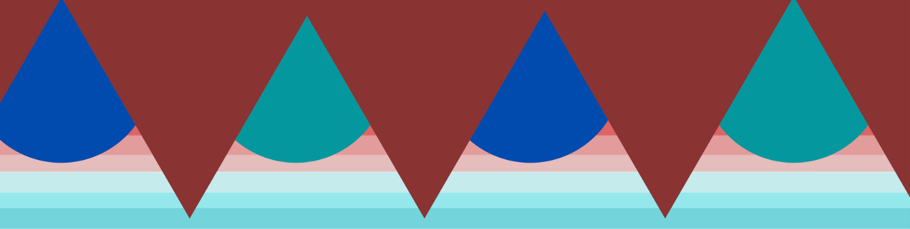

OU Libraries Virtual Tour
Scan the markers located throughout the library with your mobile device or check out an iPad from circulation.
Select "easy mode" or "hard mode" below to start scanning. You will see a set of icons on the left of your screen; click an icon for directions to the location (easy mode) or a clue to decipher (hard mode).
Don't worry - you can return to this page to swap between easy and hard mode whenever you like!
To scan a marker, simply point your phone camera at it! When a marker is recognized, its icon will turn red.
Find all 7 markers and receive a free 3D printed OU earsaver at the Research Help Desk (supplies are limited).